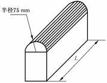
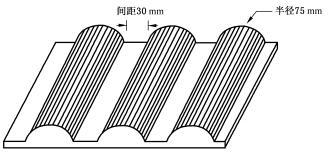

Compression¶
Verifies a battery pack or system survives a quasi-static lateral crush load — representative of a side-impact intrusion or a parking-structure crush — without fire or explosion, and retains electrical isolation.
| Clause (method) | 8.2.4 |
| Clause (pass criteria) | 5.2.4 |
| Object | pack / system (with optional inclusion of vehicle body-frame structure) |
| Status vs. 2020 | revised (requirements and method) |
| Observation period | 2 h at test environment temperature |
Pass criteria¶
After the compression test, the battery pack or system shall show no fire and no explosion. Insulation resistance after testing shall not be less than 100 Ω/V (DC), or 500 Ω/V if an AC circuit is present.
Compression is the only pack/system test in clause 5.2 where leakage and housing cracks are explicitly not required to be absent. The crush load is severe enough that case rupture and electrolyte leakage are tolerated, provided fire/explosion do not occur and post-test insulation is maintained.
Source: GB 38031-2025, clause 5.2.4 (PDF p. 12).
Pre-conditions¶
- Sample: A battery pack or system. For packs installed inside a vehicle body frame, the body structure components are allowed to be included in the test object. (8.2.4.1)
- Pre-treatment: Standard, per clause 7.2.
- SOC: Highest working SOC per clause 6.1.10.
- Compression position: The weak point position provided by the manufacturer. (8.2.4.2 c)
- Insulation baseline: Measure before the test per Appendix B (clause 6.1.5).
Test parameters¶
| Parameter | Value | Source |
|---|---|---|
| Compression plate (choose one) | Type 1 or Type 2 (see below) | 8.2.4.2 a) |
| Compression direction | x-direction and y-direction (vehicle driving direction = x; perpendicular horizontal = y) | 8.2.4.2 b) |
| Splitting allowed | Yes — for safety, the two directions may be performed on two separate test objects | 8.2.4.2 b) |
| Compression position | Manufacturer-provided weak point | 8.2.4.2 c) |
| Compression speed | ≤ 2 mm/s | 8.2.4.2 d) |
| Stop condition (no body structure) | Force reaches 100 kN or deformation reaches 30 % of overall size in compression direction | 8.2.4.2 e) |
| Stop condition (with body structure) | Force reaches 100 kN | 8.2.4.2 e) |
| Hold time at stop | 10 minutes | 8.2.4.2 f) |
| Observation after test | 2 h at test environment temperature | 8.2.4.3 |
Compression plate options¶

Figure 6 from GB 38031-2025 (PDF p. 21). Single semi-cylindrical plate, radius 75 mm. Length L > pack height, ≤ 1 m.
Figure 7 from GB 38031-2025 (PDF p. 21). Three semi-cylindrical plates, radius 75 mm each, 30 mm spacing (间距30 mm) between centres. Overall plate ≤ 600 × 600 mm.Type 1 (Figure 6): A single semi-cylindrical plate with a 75 mm radius. The semi-cylinder length L shall be greater than the test object height but not exceed 1 m. (8.2.4.2 a 1)
Type 2 (Figure 7): A 600 mm × 600 mm (length × width) plate, or smaller, carrying three semi-cylindrical features each with a 75 mm radius, with a 30 mm gap between adjacent semi-cylinders. (8.2.4.2 a 2)
Procedure¶
- Choose the compression plate type — single 75 mm semi-cylinder (Type 1) or the 600×600 mm three-cylinder plate at 30 mm pitch (Type 2). (8.2.4.2 a)
- Position the test object so the compression load is applied at the manufacturer-specified weak point. (8.2.4.2 c)
- Apply compression along the x-direction at a speed ≤ 2 mm/s. (8.2.4.2 b, d)
- Stop compression when the force reaches 100 kN or deformation reaches 30 % of the overall size in the compression direction (or 100 kN if the body structure is included). (8.2.4.2 e)
- Hold the position for 10 minutes. (8.2.4.2 f)
- Repeat steps 3–5 in the y-direction (on the same sample, or on a second sample for safety). (8.2.4.2 b)
- After both directions complete, observe the test object for 2 h at test environment temperature. (8.2.4.3)
- Re-measure insulation resistance per Appendix B. Confirm no fire/explosion occurred during or after the crush. (Leakage and housing cracks are tolerated by 5.2.4.)
After-test observation¶
Observe the test object for 2 hours at the test environment temperature (22 °C ± 5 °C) after the second-direction hold completes. (8.2.4.3)
What changed from GB 38031-2020¶
The 2025 revision changed both the requirements (5.2.4) and the test method (8.2.4):
- Requirements (5.2.4): The pass criterion was rewritten to require only no fire and no explosion, plus the insulation thresholds (100 Ω/V DC, 500 Ω/V AC). "No leakage" and "no housing crack" are explicitly not required after compression — recognizing that 100 kN crush at 30 % deformation will commonly rupture the case.
- Method (8.2.4): Two compression-plate options are now offered — the original single 75 mm-radius semi-cylinder (Type 1) and a new 600 × 600 mm plate carrying three 75 mm-radius semi-cylinders at 30 mm pitch (Type 2). The dual-direction (x and y) requirement, the ≤ 2 mm/s speed, the 100 kN / 30 % stop condition, and the 10-minute hold are explicit.
- The body-frame inclusion allowance for packs installed inside the vehicle body is explicit, with a modified stop condition (force-only, no deformation cutoff) for that configuration.
Migration impact: Re-running compression is generally required because the new Type 2 multi-cylinder plate creates a different load distribution than Type 1, and OEMs that previously certified with a non-conforming plate must re-test. The relaxed pass criterion (leakage and crack now allowed) does not retroactively benefit older designs that already passed the stricter 2020 wording. See Re-certification timeline.
Engineering notes (non-normative)¶
The notes below are practical interpretation, not part of the standard.
Engineering note (non-normative): The "with body structure: stop at 100 kN" rule effectively removes the 30 % deformation cutoff when the vehicle frame is included. This matters: a pack inside a stiff side-sill structure will reach 100 kN long before reaching 30 % deformation, so the body-frame configuration is a less aggressive test than the bare-pack configuration. OEMs that ship the pack as a structural member of the vehicle benefit from this allowance, but only if the body frame is genuinely part of the production design, not added solely for testing.
Engineering note (non-normative): Type 2 (three 75 mm semi-cylinders at 30 mm pitch on a 600 × 600 mm plate) approximates a more distributed crush — closer to a pole impact spread across the pack length — while Type 1 (single 75 mm semi-cylinder, length-of-pack) is a line load. Choosing Type 2 generally lowers the local stress concentration and is friendlier to thin-walled prismatic-cell packs. Confirm the chosen type is documented in the test report; switching plate types between development and certification will invalidate the data.
Engineering note (non-normative): The "weak point" provided by the manufacturer must be defensible. Selecting a stiff cross-member to game the 100 kN trip condition will be challenged during type approval. Defensible weak-point selections target locations where (1) the pack wall is thinnest, (2) busbars or connectors lie close to the case, or (3) cell-stack edges concentrate without a stiffener. Document the rationale alongside the test report.
Related¶
- Pass/fail criteria: What "no fire, no explosion" means, Insulation resistance thresholds
- Glossary: Housing crack, Leakage
- Related tests:
- Cell compression / extrusion (8.1.7) — analogous test at cell level, same 75 mm radius, different stop conditions
- Vibration (8.2.1) — typically precedes compression in a campaign sequence
- Bottom impact (8.2.16) — different load case (underbody point impact vs. lateral quasi-static crush)
- Source: GB 38031-2025, clause 8.2.4 (PDF p. 20–21); pass criteria in clause 5.2.4 (PDF p. 12).